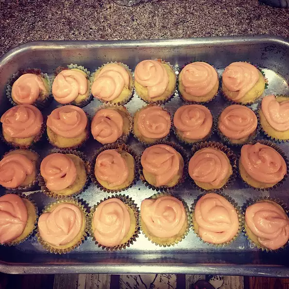

Banana and Vanilla Cupcakes

Description
These cupcakes are amazing but aren't limited to the recipes alone. You can add your own decorations to the cupcakes with
sprinkles or by topping them with coconuts.The prep time for these cakes will be 30 minutes with 20 minutes of cook time.
There may be an hour of addition time to make them. The serving size for these cupcakes is about 12.
Ingredients
Banana Cupcakes
- 1 and 3/4 cups of all-purpose flour
- 2 teaspoons baking powder
- 1/2 teaspoon salt
- 1/2 cup butter, at room temperature
- 1/2 cup white sugar
- 3 eggs
- 1 teaspoon vanilla extract
- 1/4 cup milk
- 2 large bananas, chopped
Buttercream Frosting
- 2/3 cup butter, at room temperature
- 1/2 teaspoon vanilla extract
- 2 and 1/4 cups confectioners' sugar
- 2 tablespoons heavy cream
- 4 drops yellow food coloring, or as desired(optional)
Steps
- Preheat an oven to 350 degrees F (175 degrees C). Grease 12 muffin cups or line with paper muffin liners.
- Whisk the flour, baking powder, and salt together in a bowl; set aside. Beat 1/2 cup butter and the white sugar with an
electric mixer in a large bowl until light and fluffy. Add the eggs one at a time, allowing each to blend into the butter
mixture before adding the next. Beat in the vanilla with the last egg. Pour in the flour mixture alternately with the milk,
mixing until just incorporated. Fold in the chopped bananas, mixing just enough to evenly combine. Pour the batter into
prepared cups.
- Bake in the preheated oven until a toothpick inserted into the center comes out clean, about 20 minutes. Cool in the
pans for 10 minutes before removing to cool completely on a wire rack.
- While the cupcakes are cooling, make the buttercream by beating 2/3 cup of butter in a bowl until smooth and glossy.
Beat in the vanilla, followed by the confectioners' sugar. Once no dry lumps of sugar remain, add the cream and food
coloring. Whip on high speed until light and fluffy. Frost the cooled cupcakes with the buttercream frosting.
Homepage